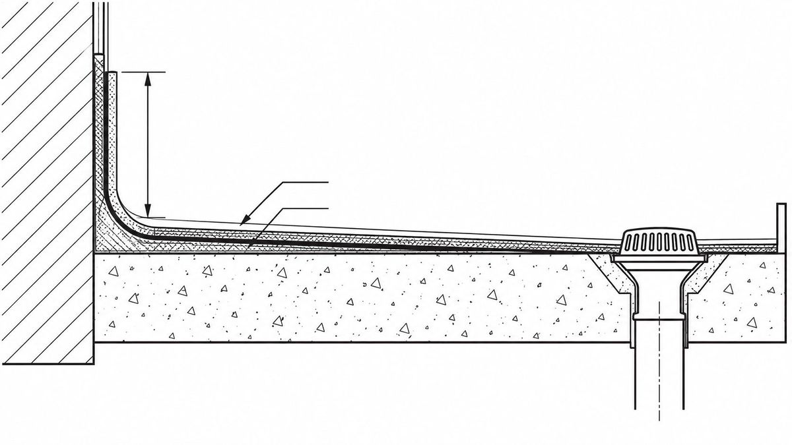

гидроизоляция балкона — это обмазочная мастика в 2 слоя общей толщиной 1,5–2 мм с заходом на стены 150–200 мм, галтель 30–50 мм в углу и лента 120 мм на примыканиях. Расход 1,5–2 кг/м², цена работ с материалом 700–1 500 руб./м². Лоджия 6 м² обходится в 8 000–25 000 руб. Главное правило: гидроизоляция делается ДО стяжки и плитки — поверх готового пола она бесполезна.
Зачем она нужна на балконе

| Источник воды | Что происходит без гидроизоляции |
|---|---|
| Конденсат на остеклении | вода уходит по плите к соседям |
| Занос снега и дождя | намокание утеплителя |
| Протечка с верхнего балкона | пятна на потолке и стенах |
| Мытьё пола | вода в стык плиты и стены |
| Стирка и сушка белья | постоянная влага у плинтуса |
Балконная плита — это «козырёк» над соседом снизу. Любая вода, попавшая на плиту, идёт по ней и проявляется у соседа пятном на потолке. Спор с соседями и ремонт обходятся дороже гидроизоляции в 5–10 раз.
Материалы
| Тип | Толщина | Цена за м² | Когда |
|---|---|---|---|
| Цементно-полимерная мастика | 1,5–2 мм | 250–500 руб. | под стяжку и плитку |
| Полиуретановая мастика | 1–1,5 мм | 400–800 руб. | эластичная, для трещин |
| Битумно-полимерная | 2–3 мм | 200–450 руб. | под стяжку, не под клей |
| Рулонная наплавляемая | 3–4 мм | 350–700 руб. | большие площади |
| Пропиточная (жидкое стекло) | — | 120–250 руб. | не заменяет мембрану |
Под плитку берут цементно-полимерную или полиуретановую мастику: битумная не даёт сцепления с клеем, и плитка отходит. Пропитка — только дополнительная мера, самостоятельной гидроизоляцией не является.
Узлы: углы, примыкания, слив
| Узел | Решение | Цена |
|---|---|---|
| Угол плита–стена | галтель 30–50 мм из раствора + лента 120 мм | 300–700 руб./п.м |
| Примыкание к стене | заход мастики 150–200 мм | входит в м² |
| Вокруг слива | фланец + мастика + лента | 1 500–3 500 руб. |
| Стык плит | расшить, заполнить герметиком, лента | 400–900 руб./п.м |
| Порог и дверной проём | заход на 100 мм, порог с герметиком | 500–1 200 руб. |
90 % протечек на балконах — это углы и примыкания, а не поле плиты. Галтель и лента в углу обязательны: мастика на прямом угле трескается при температурных деформациях за 1–2 зимы.
Смета лоджии 6 м²
| Позиция | Объём | Стоимость |
|---|---|---|
| Мастика 2 слоя | 6 м², 12–15 кг | 2 500–6 000 руб. |
| Грунт | 6 м² | 600–1 500 руб. |
| Лента и галтель | 14 п.м | 1 500–4 000 руб. |
| Ремонт трещин | по факту | 1 000–4 000 руб. |
| Работа | 6 м² | 4 000–12 000 руб. |
Итого 9 600–27 500 руб. Своими руками — 4 500–12 000 руб. на материалы. Полная гидроизоляция с ремонтом плиты и сливом — до 35 000 руб.
Диагностика: где именно течёт
| Симптом | Вероятная причина | Что делать |
|---|---|---|
| Пятно на потолке у соседа по центру | трещина в плите | расшить, заполнить, мастика + лента |
| Пятно по краю плиты | нет захода на стену | доп. слой по периметру |
| Влага у плинтуса внутри | вода за плинтусом | вскрыть, галтель, лента |
| Мокрый утеплитель под стяжкой | гидроизоляция поверх стяжки | полная переделка пирога |
| Плесень в углу | мостик холода + влага | утепление + гидроизоляция |
Проверку делают проливом: закрыть слив, налить 5–10 мм воды, оставить на 2–3 часа и осмотреть плиту снизу и углы. Пролив делают до стяжки — после неё вода просто останется внутри.
Пирог: где место гидроизоляции
| Слой | Порядок снизу вверх | Толщина |
|---|---|---|
| 1 | плита, грунт | — |
| 2 | гидроизоляция в 2 слоя | 1,5–2 мм |
| 3 | утеплитель ЭППС | 50–100 мм |
| 4 | разделительная плёнка | 0,2 мм |
| 5 | стяжка армированная | 40–50 мм |
| 6 | клей и плитка | 8–12 мм |
Гидроизоляция всегда под утеплителем: если положить её сверху, конденсат запирается в утеплителе, и он теряет 30–50 % свойств. Единственное исключение — тёплый пол: тогда мастику наносят и под утеплитель, и поверх, под стяжку с кабелем.
Температура и сроки
| Параметр | Норма | Что будет при нарушении |
|---|---|---|
| Температура воздуха | +5…+30 °C | мастика не полимеризуется |
| Влажность основания | до 5 % | отслоение плёнки |
| Сушка между слоями | 4–6 часов | слой «плывёт» |
| Полная готовность | 24 часа | стяжка повредит слой |
| Работы зимой | не ниже +5 °C | нужны тепляки и прогрев |
На неотапливаемом балконе работы планируют на тёплый сезон: при +5 °C и ниже большинство цементно-полимерных мастик не набирают прочность. Зимой работают полиуретановыми составами с прогревом плиты тепловой пушкой.
Парапет и стены
Гидроизолируют не только пол: заход на стены 150–200 мм защищает нижнюю часть отделки от влаги, поднимающейся по капиллярам. Парапет обрабатывают, если он из кирпича или бетона и на нём нет остекления — косой дождь смачивает кладку, и вода идёт вниз к плите.
| Элемент | Обработка | Цена |
|---|---|---|
| Пол | мастика 2 слоя | 250–500 руб./м² |
| Стены, заход 150–200 мм | мастика 2 слоя | входит в м² |
| Парапет сверху | мастика + отлив | 600–1 500 руб./п.м |
| Откосы и примыкания к раме | герметик + лента | 400–900 руб./п.м |
Верхний отлив на парапете — обязательный элемент: без него вода затекает под мастику с торца. Отлив ставят с уклоном 5–10 % наружу и заводят под гидроизоляцию.
Порядок работ
- Очистить плиту от старой отделки, простучать, заделать трещины ремонтным составом.
- Обеспылить, прогрунтовать в 1–2 слоя, высушить 4–6 часов.
- Сделать галтель 30–50 мм в углах, дать схватиться.
- Наклеить ленту 120 мм на углы и примыкания в первый слой мастики.
- Нанести первый слой мастики, высушить 4–6 часов.
- Нанести второй слой перпендикулярно первому, высушить 24 часа.
- Проверить сплошность, завести заход на стены 150–200 мм.
Ошибки и их цена
| Ошибка | Последствие | Исправление |
|---|---|---|
| Гидроизоляция поверх стяжки | вода под стяжкой | вскрытие 20 000–40 000 руб. |
| Нет галтели в углу | трещина за 1–2 зимы | вскрытие угла |
| Один слой | поры и пропуски | второй слой |
| Битумная мастика под плитку | плитка отходит | снятие и замена |
| Нет захода на стену | вода за плинтус | доп. слой по периметру |
Чек-лист перед началом
- Плита очищена, трещины заделаны.
- Грунт нанесён, поверхность сухая.
- Галтель 30–50 мм в углах.
- Лента 120 мм на примыканиях.
- Два слоя мастики, заход на стены 150–200 мм.
- Слив и порог герметизированы.
Частые вопросы
Нужна ли гидроизоляция на застеклённом балконе?
Да. Конденсат, занос снега и мытьё пола дают воду, которая уходит по плите к соседям снизу.
Можно ли сделать гидроизоляцию поверх стяжки?
Нет. Мастика наносится на плиту до стяжки, иначе вода остаётся под стяжкой и разрушает её.
Какая мастика лучше под плитку?
Цементно-полимерная или полиуретановая. Битумная не даёт сцепления с плиточным клеем.
Сколько слоёв мастики нужно?
Два слоя общей толщиной 1,5–2 мм, второй наносится перпендикулярно первому через 4–6 часов.
Сколько стоит гидроизоляция лоджии 6 м²?
9 600–27 500 руб. с материалами и работой. Своими руками — 4 500–12 000 руб.
Что делать, если соседи снизу жалуются на протечку?
Вскрыть пол, найти источник (обычно угол или примыкание), сделать гидроизоляцию заново по всей площади, а не точечно.
Источники
Материал подготовлен с опорой на следующие документы и данные:
Дисклеймер
Материалы журнала «Ремонт на примерах» носят информационный характер. Приведённые цены, сроки и нормативы являются ориентировочными: они зависят от региона, состояния объекта, уровня исполнителей и текущей рыночной ситуации, поэтому не могут служить точной сметой или гарантией результата. Перед началом работ проконсультируйтесь со специалистами и проверяйте актуальные требования нормативных документов. Редакция не несёт ответственности за решения, принятые на основании этих материалов.